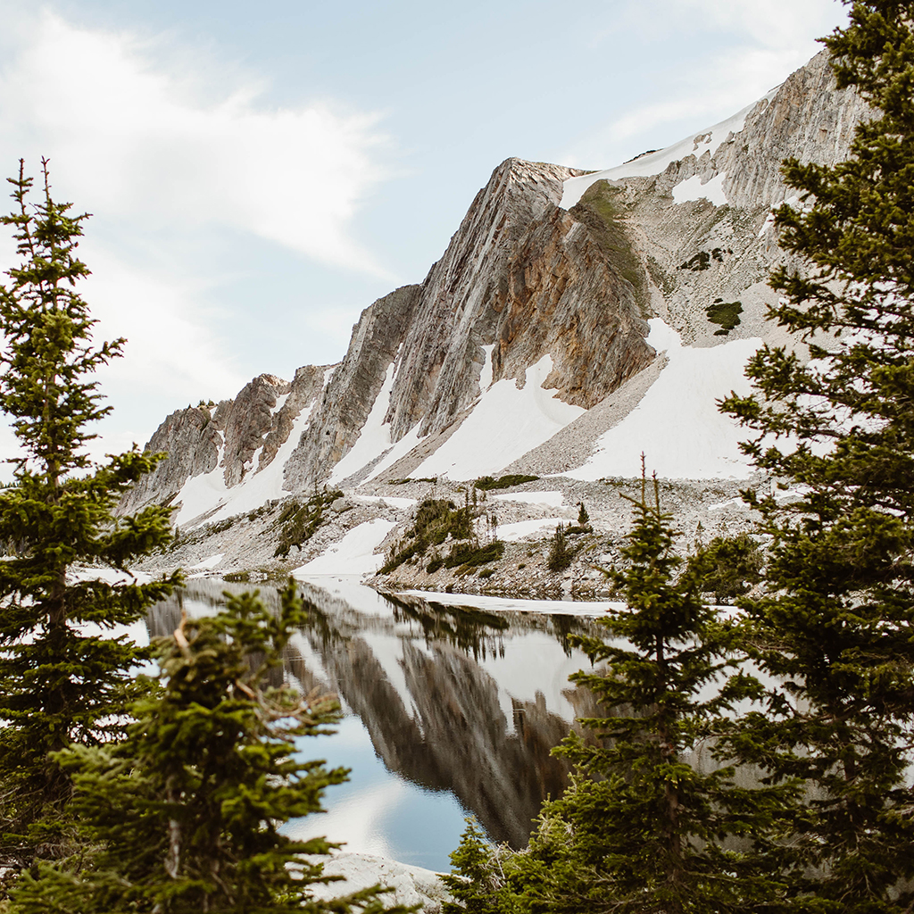
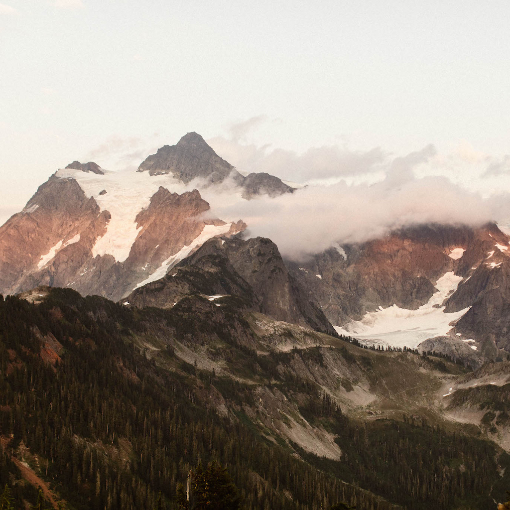
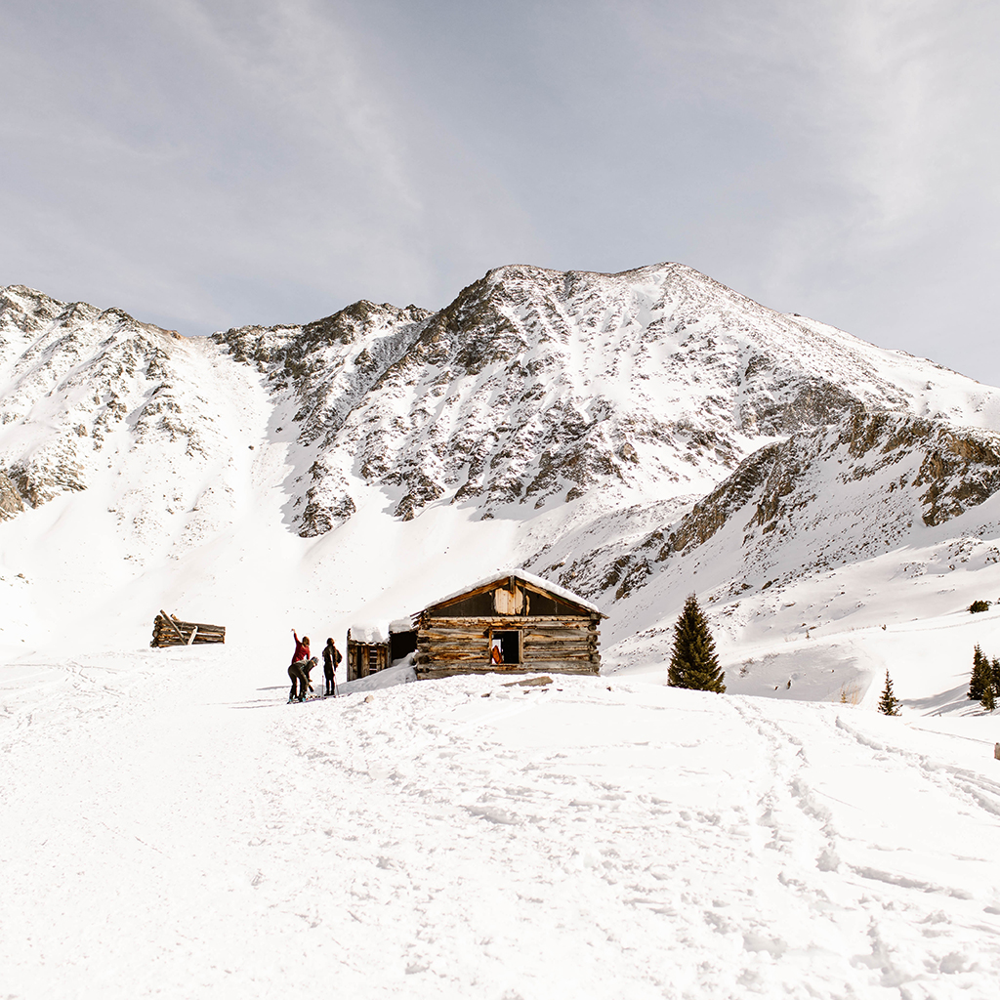
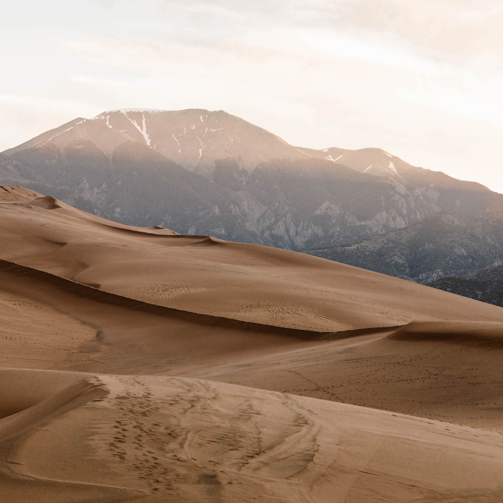

You know when you visit a place and it almost feels like it's a missing piece of you that you didn't know
you had lost? That's how every single one of these incredible destinations has made me feel at some point.
Let me give you a glimpse into what makes them all so incredible.

Snowy Range
Jackson gets all the hype in Wyoming, but personally the Snowy Range Mountains have my
heart. This is one of my favorite places to hike.

North Cascades
Washington's North Cascades are a world of their own, and Artist Point is quite possibly one of
my favorite spots to explore in this range.

Leadville, CO
Sitting at over 10,000 feet in elevation, Leadville is actually the highest incorporated
city in all of North America.

Sand Dunes
One of Colorado's lesser-visited national parks, Great Sand Dunes is actually home
to North America's tallest dune!